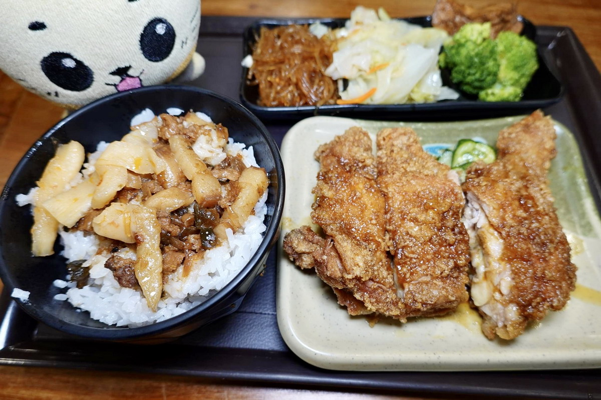

玉林雞腿大王｜西門町 1955 年老店：炸雞腿飯與懷舊用餐指南

一句話摘要
在西門町找台式炸雞腿飯，可把巷內的玉林雞腿大王列為「吃老店歷史」的選項；來源食記特別提到其炸雞腿、厚切炸排骨、肉燥飯與自家酸甜醬，但也提醒價格略高、評價屬作者個人當次體驗。
來源與驗證
本頁整理自貓大爺文章，原文標示於 2025-03-02 發布、2026-01-27 更新。店家創業年份、炸雞腿飯「始祖」與 2019 年媒體採訪等歷史敘述，均保留為來源文章的記錄；未將其延伸為獨立認證結論。
原始頁面可讀取店址、電話、餐點類型與作者實吃描述，並已將代表店面照以 JPEG 本機保存。開店時間、菜單、價格、是否供應免費湯品及現場候位狀況皆為易變動資訊。
店家資訊
- 店名：玉林雞腿大王
- 地址：台北市萬華區中華路一段 114 巷 9 號
- 電話：02-2371-4920
- 鄰近：捷運西門站、西門町商圈
- 來源文章列示營業時間：週一至週五 11:00–15:00、17:00–21:00；週六日 11:00–21:00
- 點餐方式：來源文章記錄為先取菜單勾選，至櫃台先付款
文章重點整理
- 原文記錄店家自 1955 年創業、傳承四代；門面在中華路巷內，第一次前往可留意巷口與招牌。
- 餐點核心為炸雞腿、炸排骨、鱈魚排與蝦捲，可搭配飯或麵，另有小菜。
- 作者描述雞腿為金黃酥香、肉質嫩且多汁；調味走鹹甜、帶些酸味，自家酸甜醬是辨識度之一。
- 白飯以肉燥飯形式供應；餐具、調味料與湯品為自助取用，湯品種類會變換。
- 文中提及 2019 年 CNN 記者採訪時，蔡英文曾在店內用餐；此為來源文章所述歷史脈絡。
必懂點法與適合情境
- 首訪可從招牌炸雞腿飯開始，想比較另一主力品項可加點厚切炸排骨。
- 適合：西門町逛街、看電影前後，想快速吃一餐台式便當；或對台北老店、雞腿飯文化有興趣時。
- 若期待精緻配菜或追求「非吃不可」的現代炸雞腿，來源作者的結論較偏向懷舊與便利，而非專程朝聖型目的地。
出發前提醒
- 營業時間、菜單、價格、公休、付款方式與候位情況都可能改變，建議先電話確認。
- 「台灣炸雞腿飯始祖」與「全台第一家」為食記轉述的考證／媒體說法；可視為用餐背景，不宜當成未附原始史料的絕對結論。
- 餐點口感、白飯軟硬、配菜份量與湯品皆是作者當次體驗，實際供應以現場為準。
- 若攜帶幼童使用自助熱湯，來源文章亦提醒留意燙傷風險。
為什麼收進生活雷達
它把西門町常見的快速用餐選擇，連回 1950 年代的台式炸雞腿飯脈絡；對於規劃西門町散步、電影或老店主題行程，這是一筆好查找的在地餐食備忘。